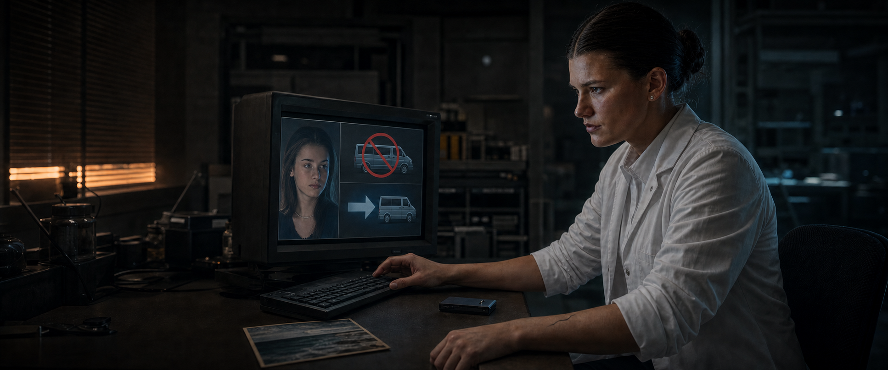
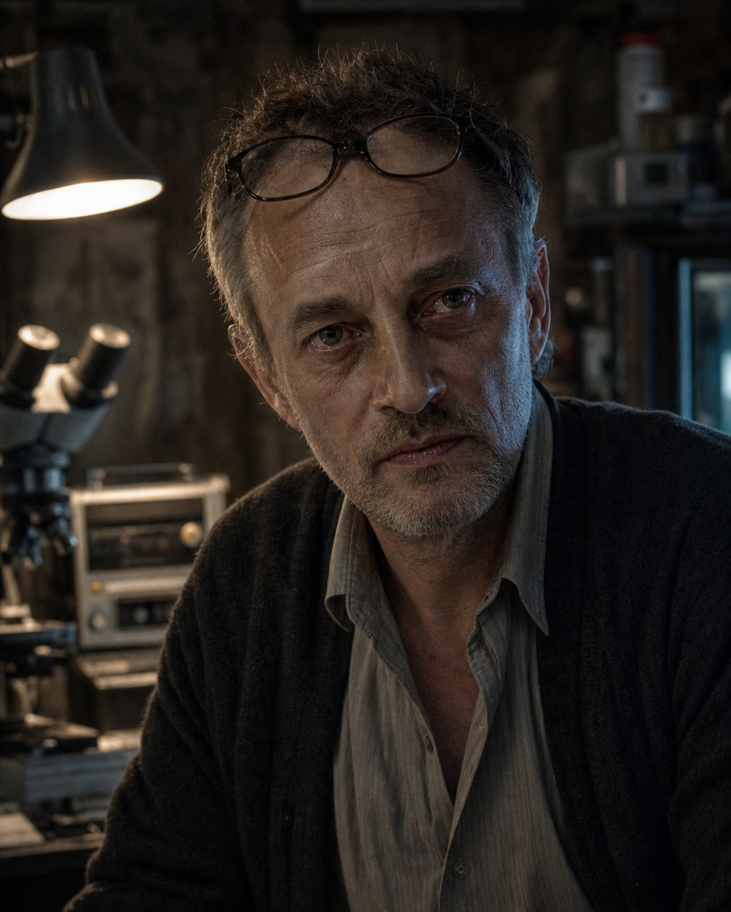
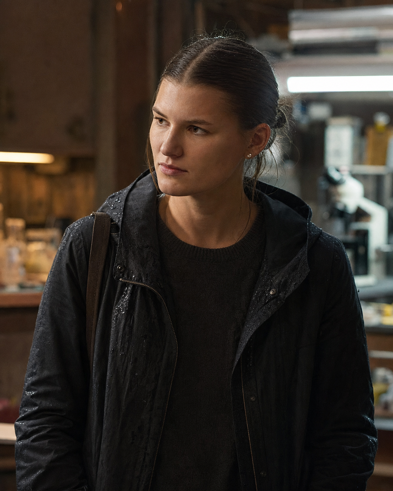
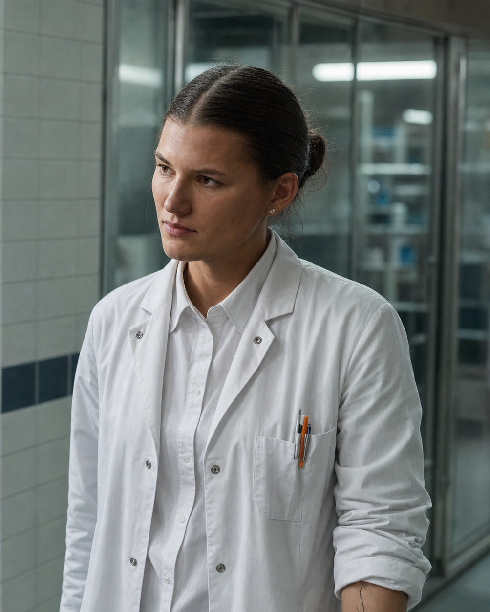
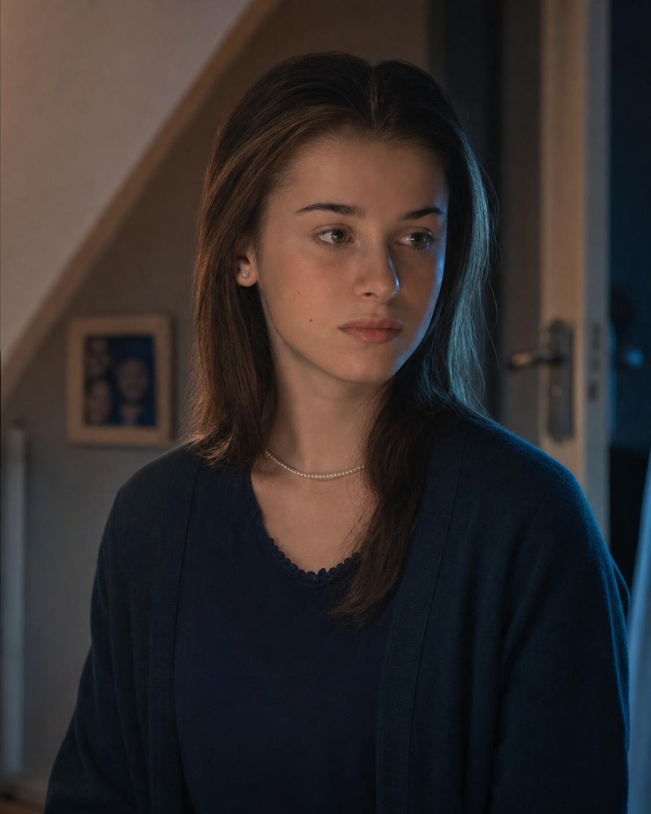
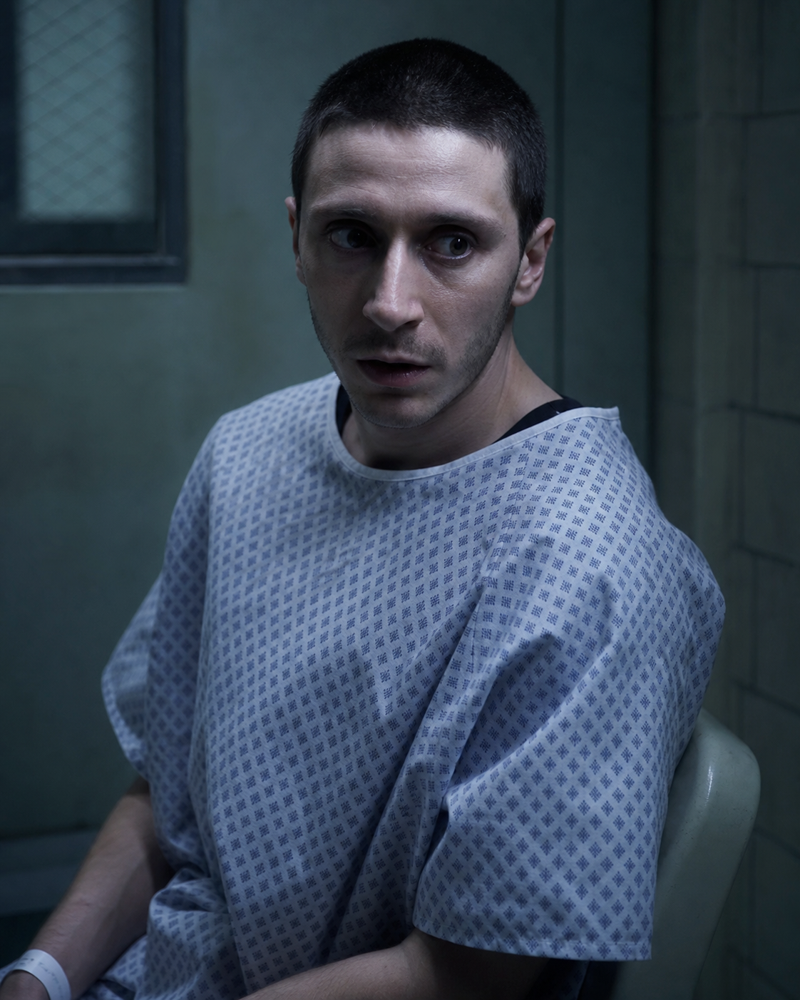
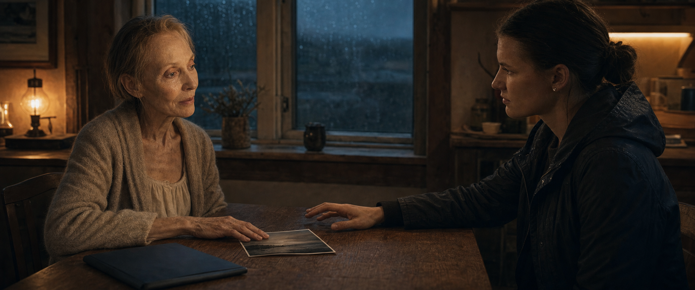
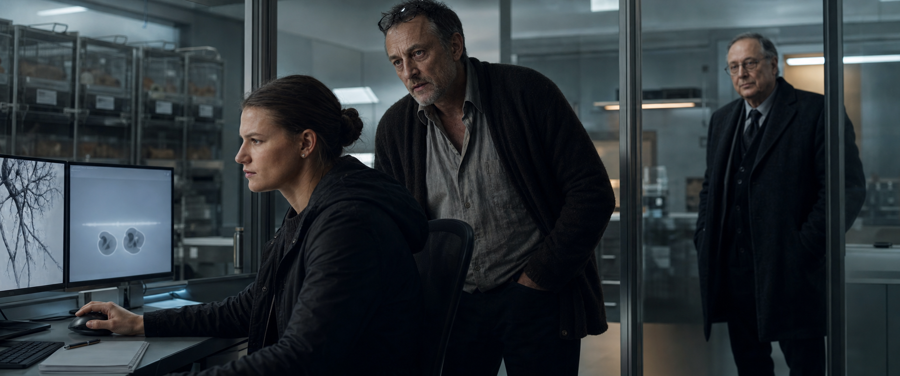
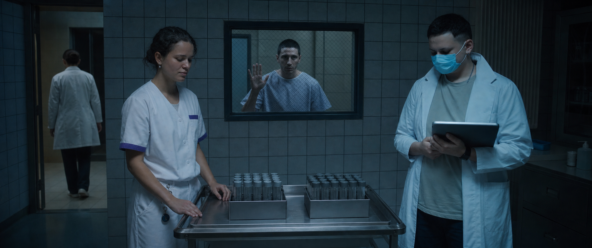
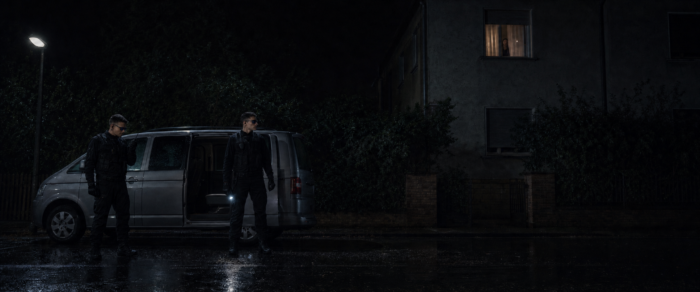

Eine klare Grenze
Eva will leben, aber nicht durch einen fremden Körper. Richard verspricht es — und akzeptiert Kesslers Infrastruktur trotzdem.
Prequel · Drehbuch v4 · ca. 15–16 Minuten
Ein Arzt bricht jede Regel, um seine sterbende Frau zu retten. Als seine Tochter den entscheidenden Fehler korrigiert, muss sie wählen, ob die Forschung mit der Familie endet — oder ob ein fremdes Mädchen den Preis bezahlt.

Die neue Kausalität
V4 schließt die alten Sprünge: Eva entscheidet informiert nur für sich, Klara bleibt bis zu Noras Freigabe zu Hause, und der letzte Schnitt führt ohne Zeitsprung in den Hauptfilm.
Eva will leben, aber nicht durch einen fremden Körper. Richard verspricht es — und akzeptiert Kesslers Infrastruktur trotzdem.
Nora markiert einen tödlichen Transferbefund als technischen Ausreißer. Damit wird aus Richards Ausnahme ein reproduzierbares Verfahren.
Nora kann Klara retten und alles beenden. Sie stabilisiert A0,6, übernimmt die Leitung und autorisiert den Transport selbst.
Figuren
Nora/Lilith, Klara, Frank, Susan, Lia und die Sicherheitskräfte wurden aus Hauptfilm-Frames als Identitäts-, Kostüm- und Weltanker neu aufgebaut.

Liebe als Rechtfertigung. Er öffnet die Tür und erkennt zu spät, wer hindurchgeht.
Keine passive Motivation, sondern die moralische Grenze der Geschichte.

28, Molekularbiologin. Sie versteht die Daten — und jede Konsequenz.

Dieselbe Person, kein Ersatzgesicht: Noras operative Identität nach der Freigabe.

18, 98,7 Prozent kompatibel — und bis zu Noras Klick sicher zu Hause.

Er hat widerrufen. GenetiX hält ihn trotzdem als A0,6-Träger bereit.
Visueller Bogen
Eine einzige Kamera- und Kornlogik verbindet den warmen Familienraum mit dem blaugrünen Hauptfilm-Labor. Die Farbe verändert sich, nicht die Gesichter.

Familie, Berührung, Regen und eine Grenze, die ausgesprochen wird.

Die erste Lüge steht sichtbar zwischen Nora und Richard.

Raum, Kostüme und Figurenpositionen schließen direkt an „INFECTED“ an.
Letzter Schnitt
Das Prequel endet nicht mit einem abstrakten Plan. Es endet mit dem hellen unmarkierten Van vor Klaras Fenster — genau dort, wo der Hauptfilm einsetzen kann.
